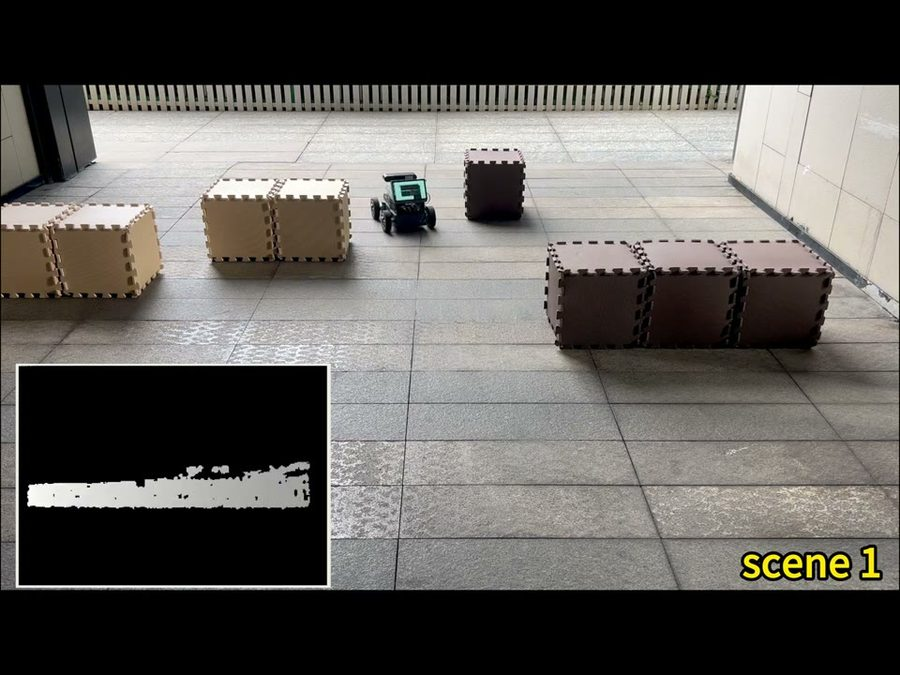
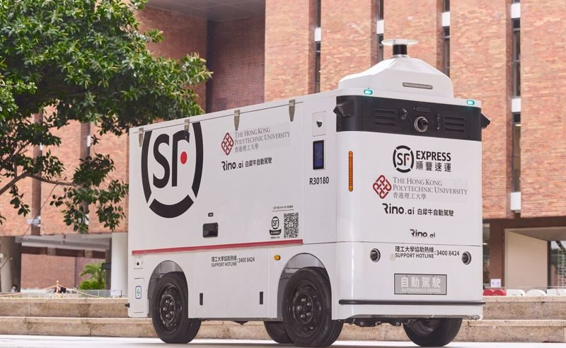

Wheeled robots are the most practical way to learn the full autonomy stack: perception, mapping, localisation, planning and control. A single vehicle can switch between tasks by changing its route, payload and software.
Our supporting parties include logistics and autonomous driving companies, so teams can work on problems that come from real operations.
- Type
- Robot platform
- Applications
- Campus delivery, patrol, mapping, logistics
- Key skills
- ROS 2, SLAM, LiDAR and camera fusion, motion planning, vehicle control
- Who can lead
- Tier 1 and Tier 2 members, by proposal
The autonomy stack
Every autonomous vehicle runs the same chain of modules, and each maps to a technical group.
- SensingLiDAR, cameras, GNSS, IMU
- Localisation and mappingWhere am I on the map?
- PerceptionWhat is around me?
- PlanningWhich path is safe and efficient?
- ControlSteering, throttle and braking
Campus delivery
Moving parcels, food and documents between buildings on a planned route.
Patrol and security
Night-time patrols that detect unusual events and report them.
Inspection and mapping
Building and updating 3D maps of campus roads, car parks and facilities.
Logistics with industry
Problems from logistics partners, such as autonomous vans for the last mile.
Engineering foundations
Two models used in almost every vehicle project.
Kinematic bicycle model
Vehicle position and heading from speed v and steering angle δ, with wheelbase L.
Pure pursuit steering
Steers towards a point on the path a distance l_d ahead, at angle α from the heading.
Photos


